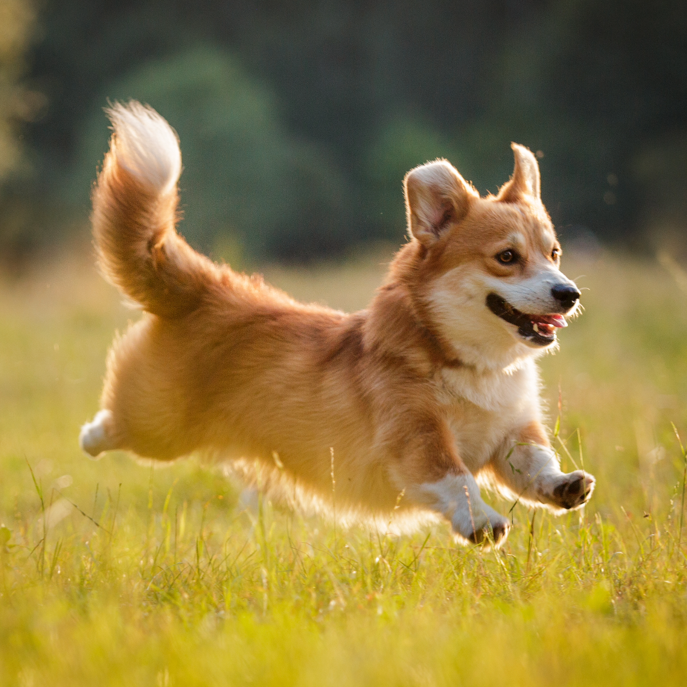
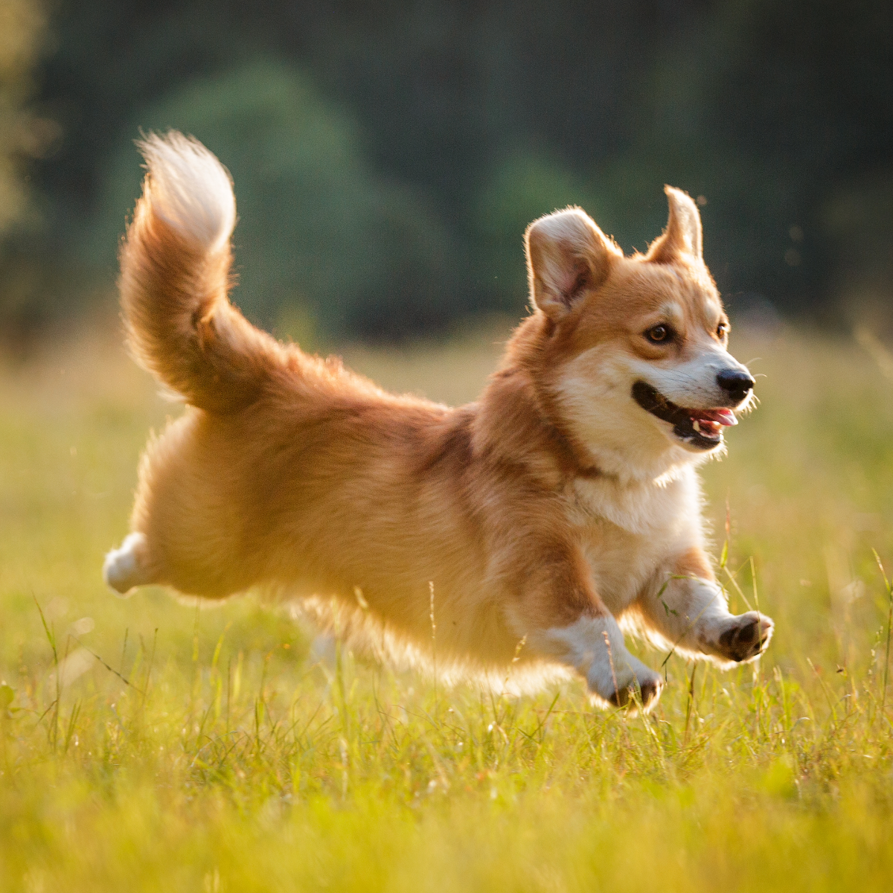

Meet My Corgi
This is Keke, my adorable friend! He joined our family in 2010 and has been bringing joy and laughter to our lives ever since.
Cute sitting posture

Have fun at park
Melancholy little face
Corgis are one of the most beloved dog breeds, known for their short legs, fox-like faces, and incredibly friendly personalities. Originally bred as herding dogs, these intelligent and affectionate companions have become popular family pets worldwide.
This is Keke, my adorable friend! He joined our family in 2010 and has been bringing joy and laughter to our lives ever since.
Cute sitting posture
Have fun at park
Melancholy little face
![[Corgi Name] playing](images/corgi-sit.avif) 
